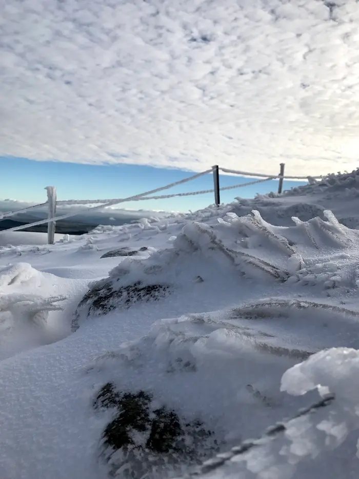
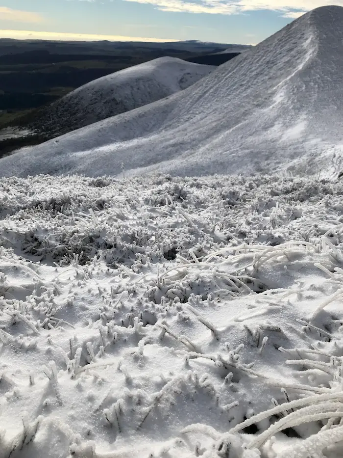
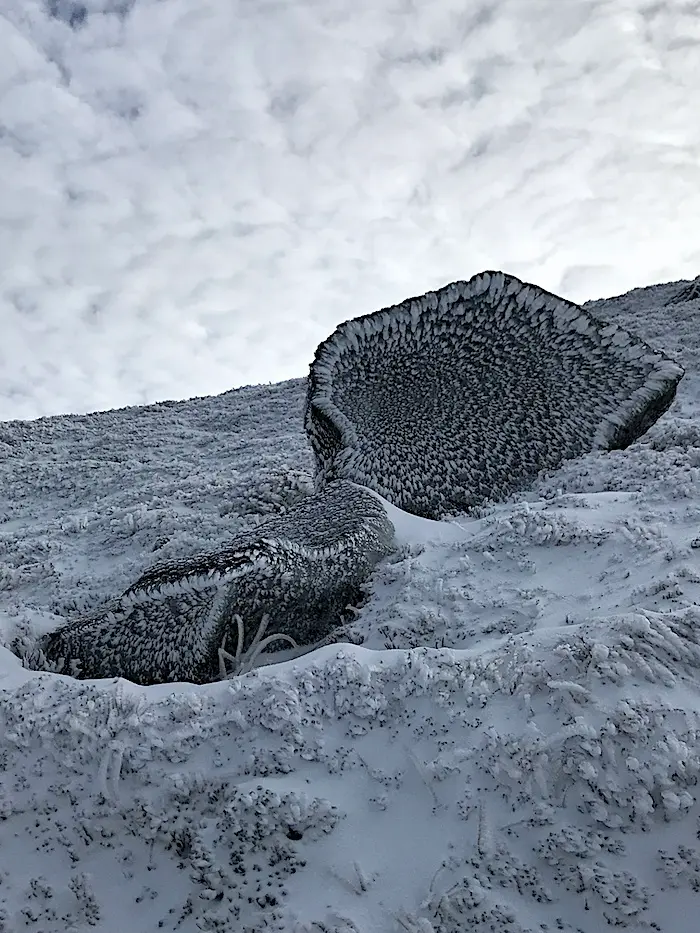
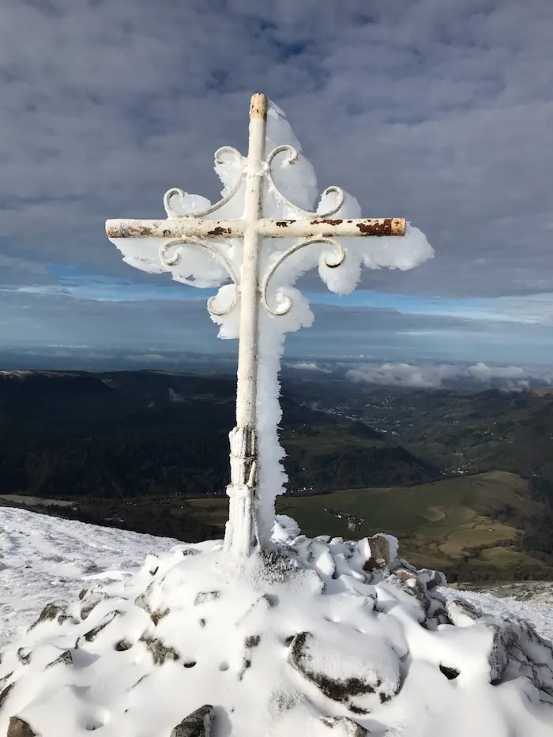

Balade au Mont-Dore début novembre 2022
Publié le 13/11/2022 dans Bric à brac.

Nous avons profité du beau temps des vacances de la Toussaint pour nous balader au Mont-Dore avant que la neige ne nous empêche d'y monter. C’était moins une !


Le paysage nous a paru bien différent de celui auquel nous étions habitués. Glace aux allures féériques, sol ressemblant à s'y méprendre à un champ d'anémones ou de corail, rochers affublés de passages magiques spychédéliques. Tout pour nous plonger dans un autre univers.


Superbe balade.